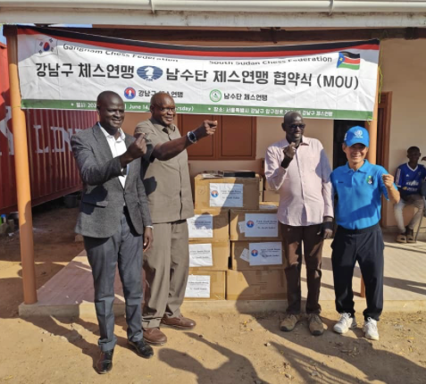
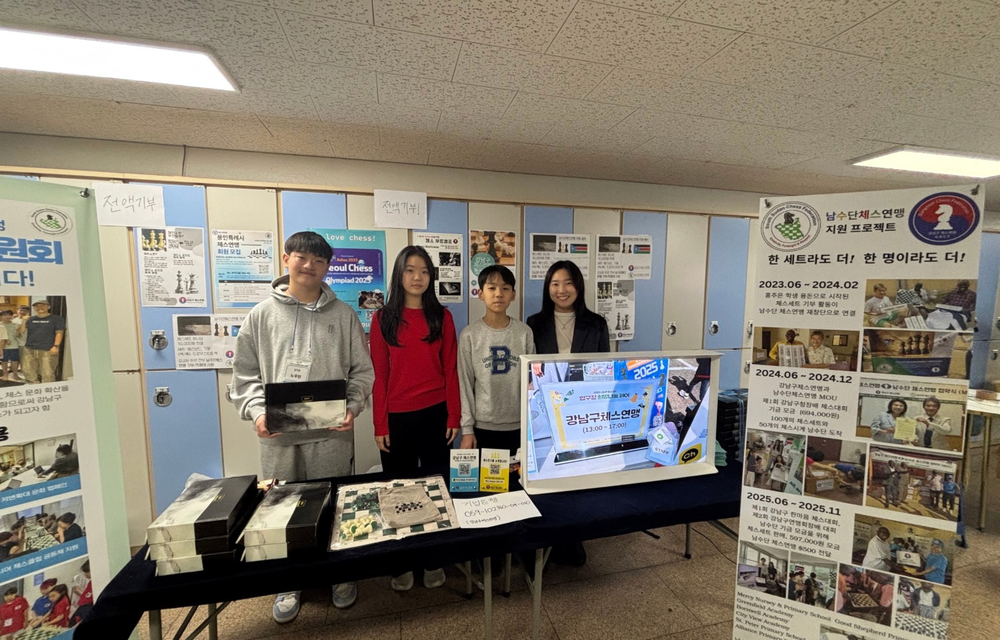
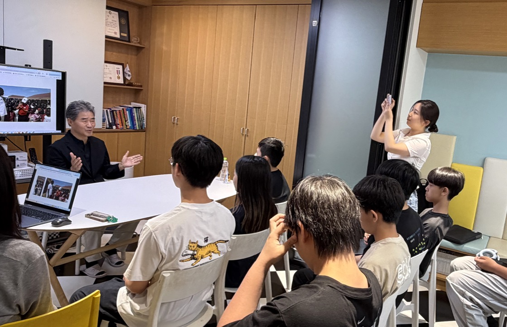

활동
남수단 기금 모금 활동
청소년 위원회는 체스를 매개로 지역사회와 연결되며, 남수단 기금 모금 활동 등 다양한 참여 활동을 진행합니다.
Youth Committee
강남구체스연맹 청소년위원회는 청소년들이 체스를 통해 교류하고 지역사회 활동에 참여할 수 있도록 돕는 청소년 자치 네트워크입니다.

청소년 위원회
청소년이 주체가 되어 체스를 통해 소통하고 활동하는 네트워크입니다.

청소년 위원회는 체스를 매개로 지역사회와 연결되며, 남수단 기금 모금 활동 등 다양한 참여 활동을 진행합니다.

청소년들이 체스를 통해 교류하고, 스스로 기획하고 참여하며 지역사회 활동을 경험할 수 있도록 돕습니다.
활동 방향
청소년들이 체스를 통해 서로 만나고 소통할 수 있도록 돕습니다.
기금 모금, 봉사, 행사 참여 등 지역사회 활동을 경험합니다.
청소년이 주체가 되어 활동을 기획하고 참여하는 경험을 쌓습니다.